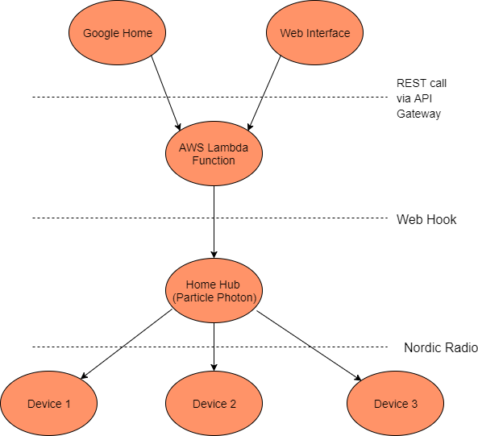
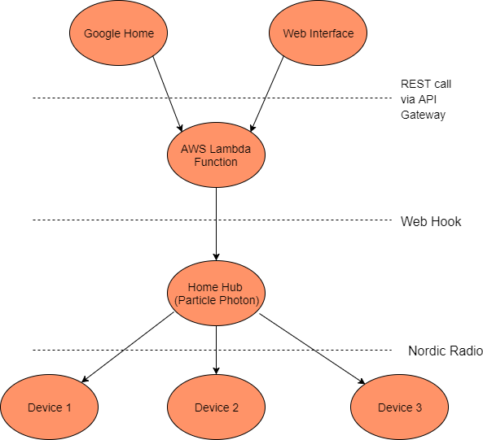

Smart Home
Python • C++ • AWS
This is an ongoing project of making smart home devices that work nicely with existing home infrastructure, particularly in apartments where you can't change things like light switches and locks. Device interaction is done through a mobile friendly web interface or Google Home voice commands. Current custom devices include:
• T.V. control (Power, input switching, volume, etc.)
• LED strip control (dim, change colors, power on/off)
In development devices include:
• Door sensors (to turn off living room lights while we sleep)
• Motorized deadbolt control
Commands are sent through the API Gateway and processed in an AWS Lambda Function. The Lambda function then forwards the command to the appropriate house hub. The hub is a wifi connected Particle Photon board and acts as a bridge between the internet and the rest of the devices. The Photon then relays messages to much cheaper Arduino Nano powered devices over a 2.4GHz Nordic radio. The flow of data is shown in the diagram below.

The T.V. controller is a box that sticks to the back of T.V.s and has an IR transmitter pointed directly in to the T.V.'s receiver. Control codes are programmed using the existing remote. The controller keeps track of which input the T.V. is on so switching inputs can be aliased to more human friendly names, ie. "switch the big T.V. to the Xbox One". Volume control is done in larger increments so you don't have to say the same command multiple times. Further improvement could be to capture how much to adjust the volume in the voice command.

The light controller powers the analog SMD 3528 RGB LED strips in our living room. The LEDs are driven by applying PWM to three MOSFETs (one for each color). Because the power supplies provided are too weak for the strips, we're utilizing old Xbox 360 power bricks for our 12V power. Interestingly, despite being able to connect end to end, the LED strips lose a ton of brightness after just one 5m segment. To combat this, we connect the start of each strip to the MOSFETs. Eventually, a 5V regulator should be put in place so that the controller doesn't need the Arduino USB connector and 12V power.
• T.V. control (Power, input switching, volume, etc.)
• LED strip control (dim, change colors, power on/off)
In development devices include:
• Door sensors (to turn off living room lights while we sleep)
• Motorized deadbolt control
Commands are sent through the API Gateway and processed in an AWS Lambda Function. The Lambda function then forwards the command to the appropriate house hub. The hub is a wifi connected Particle Photon board and acts as a bridge between the internet and the rest of the devices. The Photon then relays messages to much cheaper Arduino Nano powered devices over a 2.4GHz Nordic radio. The flow of data is shown in the diagram below.

The T.V. controller is a box that sticks to the back of T.V.s and has an IR transmitter pointed directly in to the T.V.'s receiver. Control codes are programmed using the existing remote. The controller keeps track of which input the T.V. is on so switching inputs can be aliased to more human friendly names, ie. "switch the big T.V. to the Xbox One". Volume control is done in larger increments so you don't have to say the same command multiple times. Further improvement could be to capture how much to adjust the volume in the voice command.
The light controller powers the analog SMD 3528 RGB LED strips in our living room. The LEDs are driven by applying PWM to three MOSFETs (one for each color). Because the power supplies provided are too weak for the strips, we're utilizing old Xbox 360 power bricks for our 12V power. Interestingly, despite being able to connect end to end, the LED strips lose a ton of brightness after just one 5m segment. To combat this, we connect the start of each strip to the MOSFETs. Eventually, a 5V regulator should be put in place so that the controller doesn't need the Arduino USB connector and 12V power.